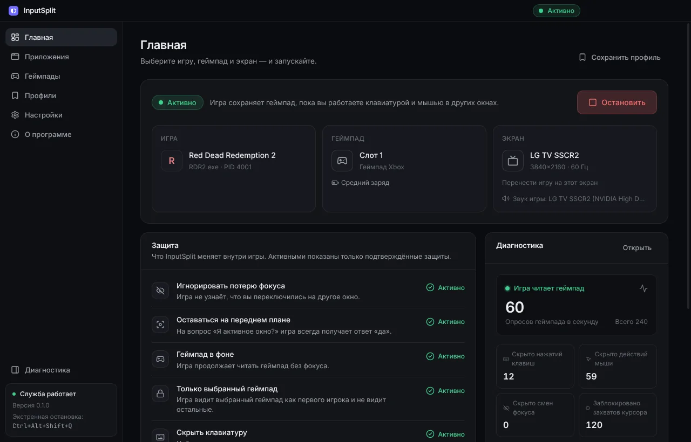
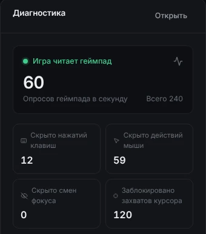
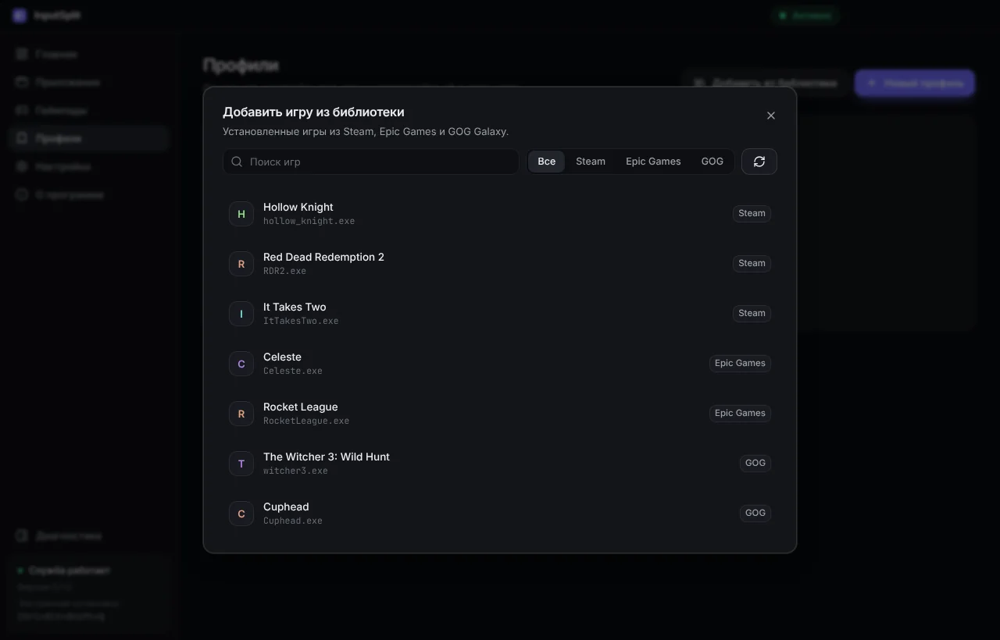
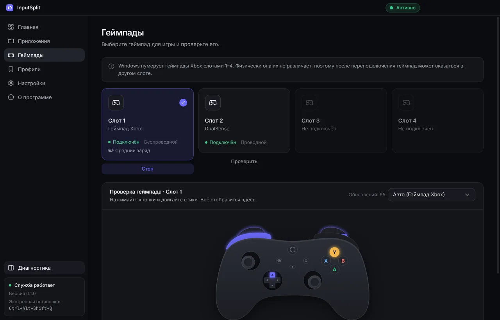
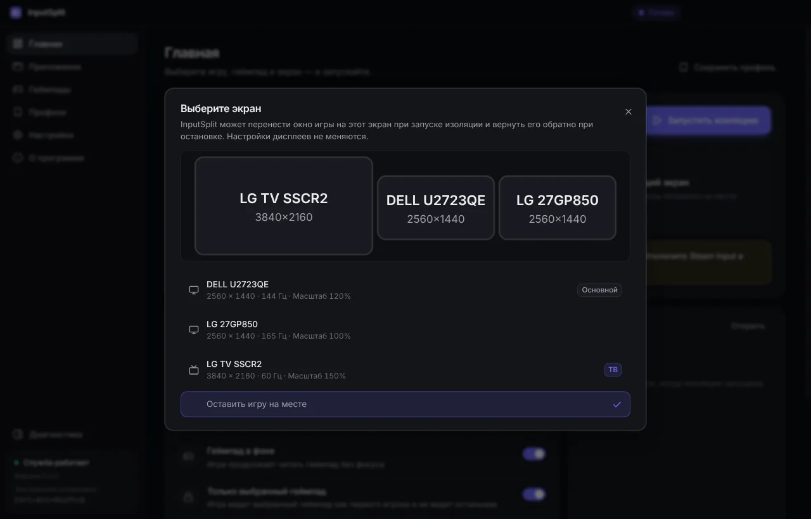
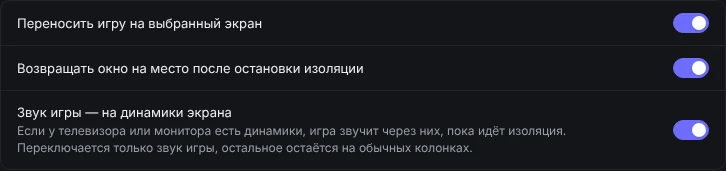
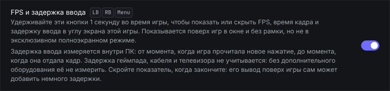
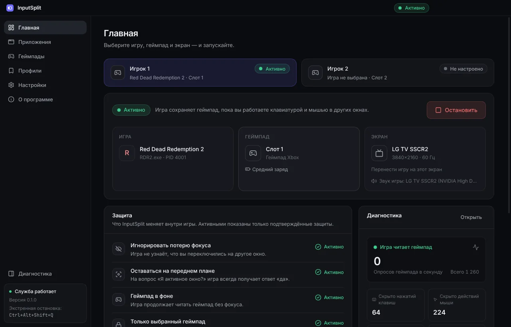
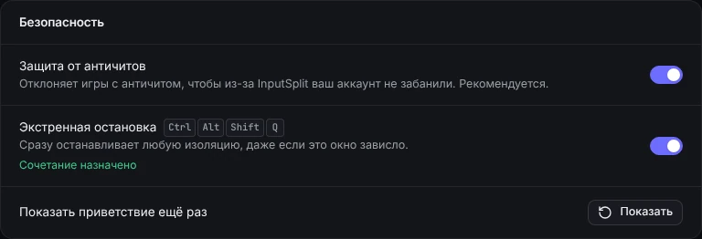

Один ПК на двоих.
Один играет, другой работает.
InputSplit позволяет одному играть на телевизоре с геймпадом, пока другой работает за тем же компьютером с Windows на клавиатуре и мыши. Игра продолжает работать в фоне и не встаёт на паузу.
- Лицензия MIT
- 11 языков
- Без прав администратора
- Обновляется сама

Знакомо?
Игра встаёт на паузу при Alt+Tab или клике на другом мониторе.
Геймпад перестаёт работать, как только окно игры теряет фокус.
Игра реагирует на набор текста и клики мыши в другой программе.
Хочется, чтобы один сидел на диване, а другой за столом, за одним компьютером.
InputSplit исправляет всё это внутри выбранной игры, и только в ней.
Всё, чтобы делить один ПК на двоих
Выберите игру и геймпад, нажмите «Начать». Остальное произойдёт само.
Игра не замечает, что вы переключились
Кликайте в браузер, переходите на другой монитор, жмите Alt+Tab сколько угодно. Игра на телевизоре продолжает работать и слушаться своего геймпада.
- Геймпад работает в фоне
- Игра не узнаёт, что активным стало другое окно, поэтому не встаёт на паузу и не глушит звук
- Ваш набор текста, движения мыши и клики не доходят до игры
- Игра не может дёргать или запирать общий курсор мыши

Ваши игры в один клик
Не нужно искать .exe. InputSplit сам находит игры, установленные через Steam, Epic Games и GOG Galaxy.
- Добавьте игру из библиотеки и сохраните её как профиль
- Играть запускает игру и изолирует её, как только появится окно
- Или включайте изоляцию автоматически при каждом запуске игры
- В списке отмечены лаунчеры, онлайн-игры и игры, которые уже работали

Любой геймпад, закреплённый за игрой
Выбранный геймпад становится первым игроком, а остальные игра не видит. Кнопки и стики можно проверить прямо в программе.
- Xbox и другие XInput-геймпады, DirectInput и HID
- Проверка геймпада вживую с картинкой вашей модели
- Заряд батареи всегда на виду
- Работает с 64- и 32-битными играми

Нужный экран и нужные динамики
InputSplit может перенести игру на телевизор при старте изоляции и вернуть её обратно. Ваши мониторы остаются как были.
- Выберите телевизор на схеме экранов
- Если у телевизора есть динамики, звук игры пойдёт через них
- Переключается только звук игры: созвоны и музыка остаются на ваших колонках
- Всё возвращается по кнопке «Остановить»


FPS и задержка ввода прямо на телевизоре
Удерживайте LB + RB + Menu секунду во время игры, чтобы показать или скрыть небольшой показатель в углу экрана игры.
- FPS, время кадра и худший кадр
- Задержка «ввод → кадр»: от чтения нажатия игрой до отдачи кадра
- Показывается поверх игр в окне и без рамки
- Измеряется внутри ПК: геймпад, кабель и телевизор добавляют свою задержку

Два игрока, две игры
Включите «Два игрока» и изолируйте две игры одновременно, у каждой свой геймпад. Два экрана и два геймпада на одном ПК.
- Отдельная вкладка на главной для каждого игрока
- Комбинация на геймпаде каждого игрока управляет только его игрой
- Клавиатура и мышь остаются свободными для третьего

Безопасно по умолчанию
InputSplit затрагивает только выбранную игру, и всё отменяется кнопкой «Остановить». В Windows ничего не меняется.
- Игры с античитом не запускаются, чтобы аккаунт был в безопасности
- Экстренная остановка: Ctrl+Alt+Shift+Q
- Если InputSplit закроется, игра сама вернётся в обычный режим
- Без глобальных перехватов клавиатуры и без прав администратора

Мелочи, которые делают жизнь проще
Запуск с дивана
Удерживайте LB + RB + View 2 секунды, чтобы включить или выключить. Геймпад подтвердит вибрацией.
Профили
Сохраните игру вместе с геймпадом и экраном и запускайте в один клик.
Время в игре
В каждом профиле видно, сколько вы уже наиграли.
Резервная копия
Перенесите профили, настройки и время в игре на другой ПК одним файлом.
Тёмная и светлая тема
Аккуратный интерфейс в тёмной или светлой теме, или как в Windows.
11 языков
По умолчанию язык как в Windows. Его можно сменить в Настройках.
Автообновление
Новые версии ставятся сами. Это можно отключить.
Сообщить о проблеме
Одна кнопка сохраняет отчёт диагностики и открывает задачу на GitHub.
Три шага, и можно играть
-
Выберите игру
Добавьте её из библиотеки Steam, Epic или GOG или укажите её .exe.
-
Выберите геймпад
Он станет первым игроком в игре. По желанию выберите и телевизор.
-
Нажмите «Начать изоляцию»
Или удерживайте LB + RB + View на геймпаде 2 секунды.
Включите в игре режим «В окне без рамки». Всё отменяется кнопкой «Остановить», а если InputSplit закроется или вы нажмёте Ctrl+Alt+Shift+Q, игра сама вернётся в обычный режим.
Загляните внутрь
Частые вопросы
Работает ли с онлайн-играми?
InputSplit сделан для одиночных и офлайн-игр. Игры с античитом (Easy Anti-Cheat, BattlEye, Vanguard и другие) по умолчанию не запускаются. Эту защиту можно выключить в Настройках → Безопасность на свой риск: тогда InputSplit перед каждой онлайн-игрой или игрой с античитом предупреждает, что аккаунт могут забанить. InputSplit никогда не пытается прятаться от античита.
Какие геймпады подходят?
Геймпады Xbox и другие XInput-геймпады, а также DirectInput- и HID-геймпады. Игры, которые читают геймпад только через Windows.Gaming.Input или GameInput, поддерживаются частично, и InputSplit об этом предупреждает.
Меняет ли что-то в Windows?
Нет. Никаких глобальных перехватов клавиатуры и изменений системных настроек. Всё происходит внутри выбранной игры и отменяется кнопкой «Остановить».
Почему Windows или антивирус предупреждает?
Установщик пока не подписан, а InputSplit загружает в игру небольшой компонент, и некоторые антивирусы на это ругаются. Если вы скачали его с официальной страницы релизов на GitHub, нажмите «Подробнее», затем «Выполнить в любом случае».
Собирает ли программа данные?
Нет. Никаких аккаунтов, рекламы и аналитики. Программа только проверяет обновления на GitHub, и это можно отключить.
Готовы делить ПК на двоих?
Бесплатно, с открытым кодом и готово за минуту.
Windows 10/11 · 64 бита · есть и в Scoop